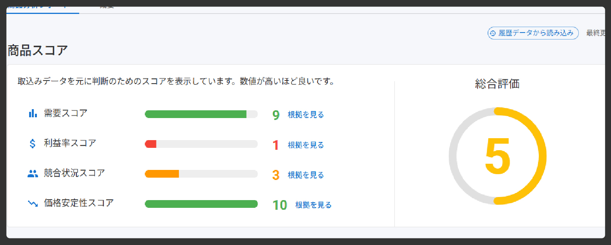

膨大な商品から、利益商品を見極めるのは至難の業。TremasFinderは利益を生み出す可能性の高い商品をハイライト。
商品ごとに売れ行きや競合状況を調べて…という作業は手間がかかります。TremasFinderは有益な情報を一目で把握できるよう可視化。
Keepaの複雑な操作に戸惑い、挫折してしまう方も少なくありません。TremasFinderは直感的な操作でKeepaの利用をサポート。
膨大な商品から、利益商品を見極めるのは至難の業。TremasFinderは利益を生み出す可能性の高い商品をハイライト。
商品ごとに売れ行きや競合状況を調べて…という作業は手間がかかります。TremasFinderは有益な情報を一目で把握できるよう可視化。
Keepaの複雑な操作に戸惑い、挫折してしまう方も少なくありません。TremasFinderは直感的な操作でKeepaの利用をサポート。
TremasFinderは物販の業務の中でも最も手間がかかる「仕入商品リサーチ」を効率化します。
気になる商品ジャンルや特徴を自然な文章で入力するだけで、Keepaの検索条件を自動で設定。ワンクリックで対象商品をすぐに確認できるので、初心者でも迷わずリサーチが進みます。

Keepaで取得したCSVをアップロードするだけで、自動的に各商品のスコアを算出。利益が出やすい商品から順に一覧表示され、仕入れ判断がすぐにできます。
競合の多さ、利益率、需要などの状況を見やすいグラフで表示。感覚的に理解できるので、数字が苦手な方でも安心して判断できます。
商品の利益性・需要・競合までを自動で分析。今まで時間がかかっていたリサーチが、たった数クリックで完了します。
大量の項目に圧倒されどう設定すればいいかわからない。検索条件を変えて何度もやり直し。
一覧を開いて、並べ替えて、グラフを見て…気になる商品が見つかるまで何百回も繰り返す。
需要や利益、注意事項等の調査のためひとつひとつネットで検索して確認。
選定に時間がかかり、仕入の判断が遅れてチャンスを逃しがち。
「売れてる夏の消耗品」など、入力するだけで適切な検索条件を提案。初心者でも迷わない。
CSVを取り込むだけで、利益率・競合・需要などのスコアを自動算出。上から見るだけ。
需要、利益見込や注意点など、仕入れ判断に必要な情報を一画面で把握。

根拠のある仕入れ候補が見つかるのですぐに行動に移せる。スピードが利益を生む。
| 機能 |
フリープラン
¥0/月
今すぐ始める
|
おすすめ
スタンダードプラン
¥500/月
今すぐ始める
|
準備中
プロフェッショナルプラン
¥3,800/月
近日公開
|
|---|---|---|---|
| 日次検索回数 | 3回 | 無制限 | 無制限 |
| 1回あたりのデータ処理件数 | 100件 | 5,000件 | 5,000件 |
| CSVインポート・分析 | |||
| 詳細グラフ分析 | |||
| 自然言語検索 | |||
| TODO・達成状況可視化 | |||
| AI質問窓口 |
TremasFinderを体験ください